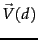

Equation 27 is fundamental to information retrieval systems that use any form of vector space scoring. Variations from one vector space scoring method to another hinge on the specific choices of weights in the vectors  and  . Figure 6.15 lists some of the principal weighting schemes in use for each of and
. Figure 6.15 lists some of the principal weighting schemes in use for each of and  , together with a mnemonic for representing a specific combination of weights; this system of mnemonics is sometimes called SMART notation, following the authors of an early text retrieval system. The mnemonic for representing a combination of weights takes the form ddd.qqq where the first triplet gives the term weighting of the document vector, while the second triplet gives the weighting in the query vector. The first letter in each triplet specifies the term frequency component of the weighting, the second the document frequency component, and the third the form of normalization used. It is quite common to apply different normalization functions to and
, together with a mnemonic for representing a specific combination of weights; this system of mnemonics is sometimes called SMART notation, following the authors of an early text retrieval system. The mnemonic for representing a combination of weights takes the form ddd.qqq where the first triplet gives the term weighting of the document vector, while the second triplet gives the weighting in the query vector. The first letter in each triplet specifies the term frequency component of the weighting, the second the document frequency component, and the third the form of normalization used. It is quite common to apply different normalization functions to and  . For example, a very standard weighting scheme is lnc.ltc, where the document vector has log-weighted term frequency, no idf (for both effectiveness and efficiency reasons), and cosine normalization, while the query vector uses log-weighted term frequency, idf weighting, and cosine normalization.
. For example, a very standard weighting scheme is lnc.ltc, where the document vector has log-weighted term frequency, no idf (for both effectiveness and efficiency reasons), and cosine normalization, while the query vector uses log-weighted term frequency, idf weighting, and cosine normalization.